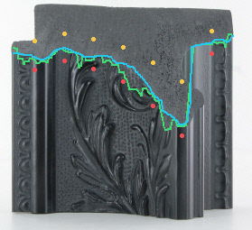
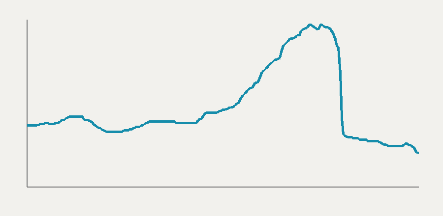
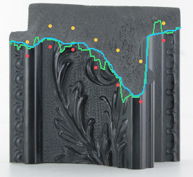
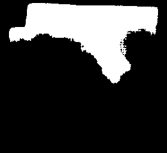
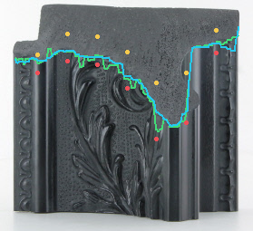

img22


model IoU 0.9029 · classical overlap 0.8698 · boundary P95 difference 21.0 px · 0.425 s
LEARNED SEGMENTATION BENCHMARK · RENDERER UNCHANGED


model IoU 0.9029 · classical overlap 0.8698 · boundary P95 difference 21.0 px · 0.425 s


model IoU 0.8838 · classical overlap 0.8711 · boundary P95 difference 18.65 px · 0.421 s



model IoU 0.794 · classical overlap 0.9117 · boundary P95 difference 13.65 px · 0.421 s